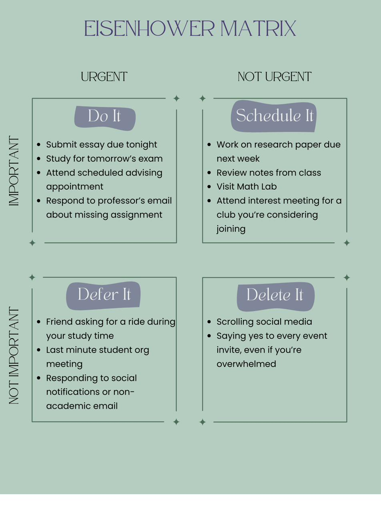
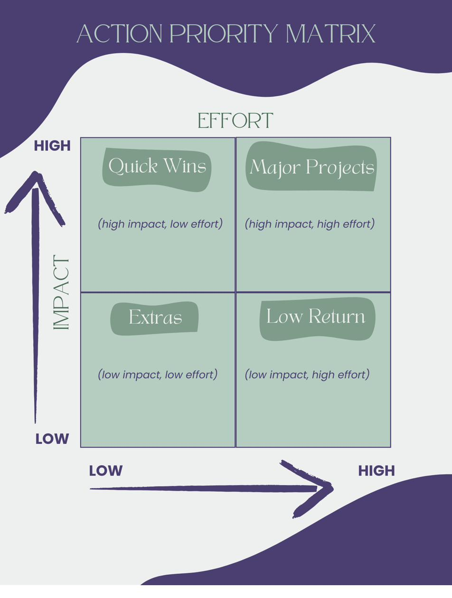
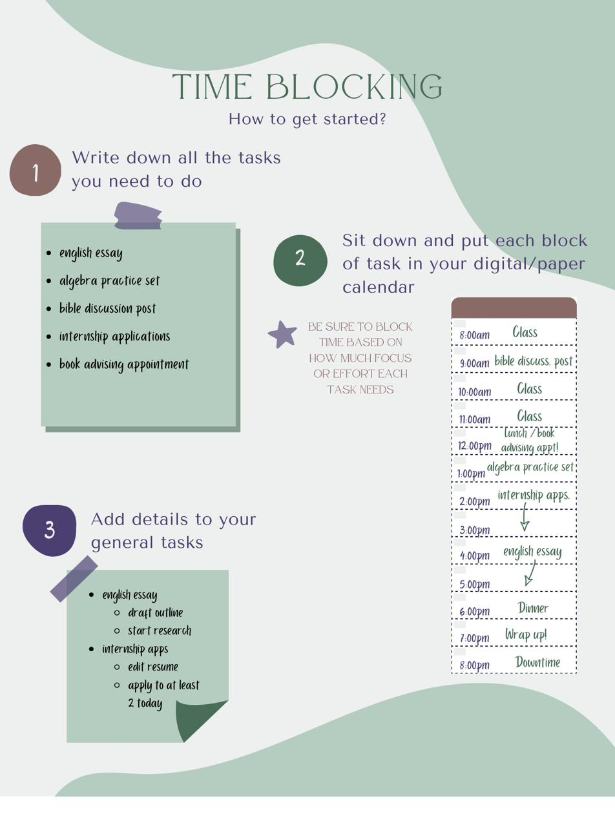
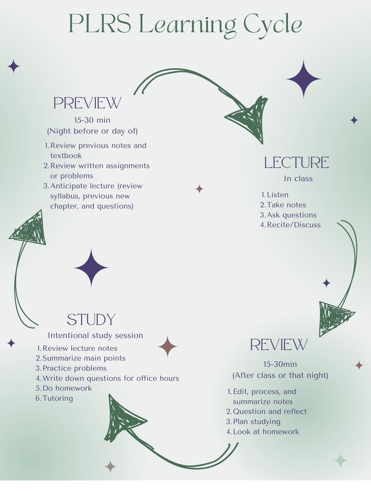
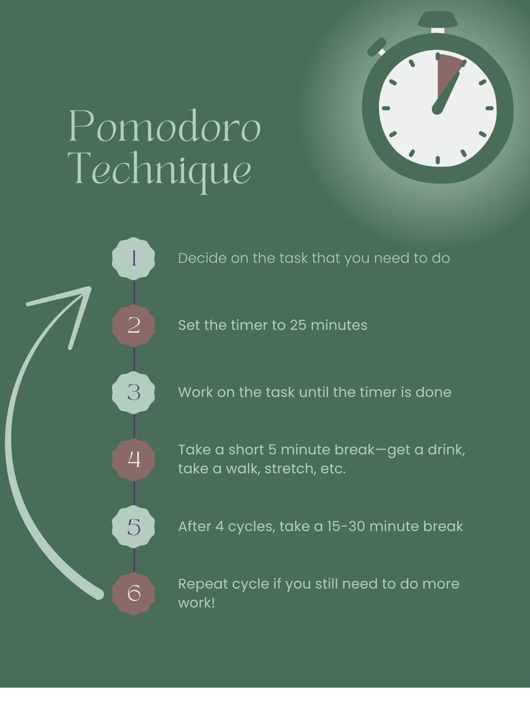
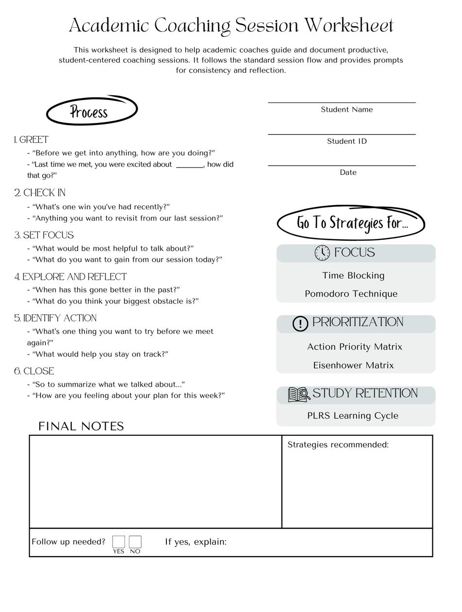

eLearning Module
Academic Coaching Essentials
A foundational training for Academic Success Coaches covering what academic coaching is, how it differs from advising and mentoring, and how to hold effective, student-centered coaching conversations.
The Problem
New academic success coaches often enter their roles with strong relational instincts but limited formal training in how to structure coaching sessions, use coaching language, or introduce student-centered strategies. Without a shared foundation, coaching practices can vary widely in tone, structure, and effectiveness.
This module addresses those gaps by providing a consistent framework for what academic coaching is and is not, how to hold effective coaching conversations, and how to recommend actionable tools while honoring a non-directive approach.
Instructional Design Approach
This module was developed using a learner-centered, scenario-driven approach that balances clarity with real-world application. Lessons combine short, focused instruction with interactive components such as scenarios, flashcards, matching activities, and knowledge checks.
A consistent coaching session flow gives learners a repeatable structure to practice and adapt, while curated downloadable tools, like strategy guides and a coaching worksheet, offer continued support beyond the module. The tone is supportive and practical, reinforcing confidence through reflection, exploration, and applied practice.
Deliverables
Coaches leave the module with a full toolkit of strategy guides they can recommend directly to students, plus a printable session worksheet to structure their own coaching conversations.






eLearning Walkthrough
Take a walkthrough of the full Articulate Rise module.
► Watch the module walkthrough Opens in Google DriveResults
Since rolling out this shared framework, coaches have had a consistent structure to lean on, from the way they open a session to the strategies they recommend. New coaches report more confidence walking into their first sessions, and students benefit from a more consistent coaching experience across the department, regardless of which coach they meet with.